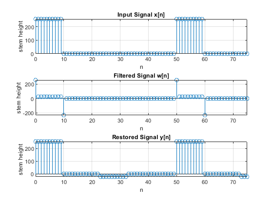
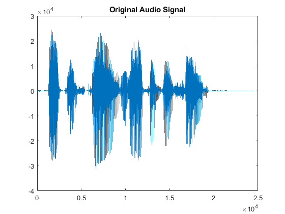
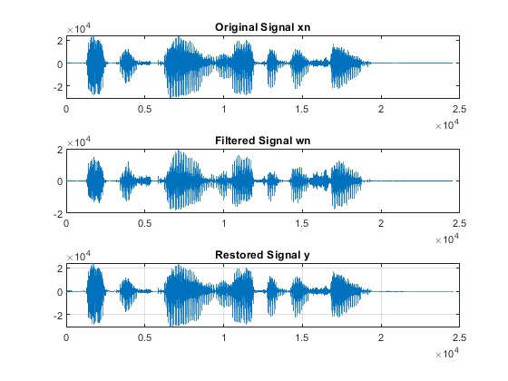
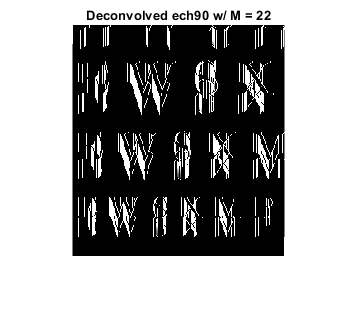
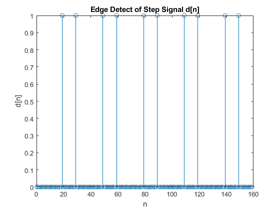
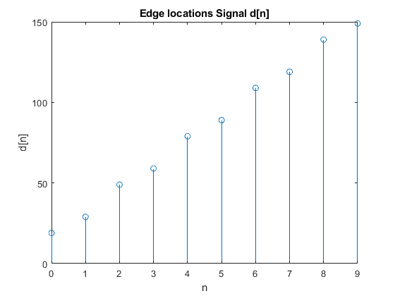
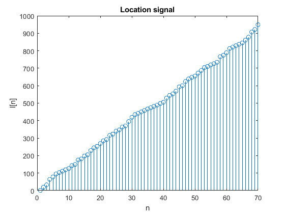

<!DOCTYPE html
  PUBLIC "-//W3C//DTD HTML 4.01 Transitional//EN">
<html><head>
      <meta http-equiv="Content-Type" content="text/html; charset=utf-8">
   <!--
This HTML was auto-generated from MATLAB code.
To make changes, update the MATLAB code and republish this document.
      --><title>Project 3:  Sampling, Convolution, and FIR Filtering &amp; FIR Filtering of Images</title><meta name="generator" content="MATLAB 9.13"><link rel="schema.DC" href="http://purl.org/dc/elements/1.1/"><meta name="DC.date" content="2023-05-05"><meta name="DC.source" content="ProjectGroup3.m"><style type="text/css">
html,body,div,span,applet,object,iframe,h1,h2,h3,h4,h5,h6,p,blockquote,pre,a,abbr,acronym,address,big,cite,code,del,dfn,em,font,img,ins,kbd,q,s,samp,small,strike,strong,tt,var,b,u,i,center,dl,dt,dd,ol,ul,li,fieldset,form,label,legend,table,caption,tbody,tfoot,thead,tr,th,td{margin:0;padding:0;border:0;outline:0;font-size:100%;vertical-align:baseline;background:transparent}body{line-height:1}ol,ul{list-style:none}blockquote,q{quotes:none}blockquote:before,blockquote:after,q:before,q:after{content:'';content:none}:focus{outine:0}ins{text-decoration:none}del{text-decoration:line-through}table{border-collapse:collapse;border-spacing:0}

html { min-height:100%; margin-bottom:1px; }
html body { height:100%; margin:0px; font-family:Arial, Helvetica, sans-serif; font-size:10px; color:#000; line-height:140%; background:#fff none; overflow-y:scroll; }
html body td { vertical-align:top; text-align:left; }

h1 { padding:0px; margin:0px 0px 25px; font-family:Arial, Helvetica, sans-serif; font-size:1.5em; color:#d55000; line-height:100%; font-weight:normal; }
h2 { padding:0px; margin:0px 0px 8px; font-family:Arial, Helvetica, sans-serif; font-size:1.2em; color:#000; font-weight:bold; line-height:140%; border-bottom:1px solid #d6d4d4; display:block; }
h3 { padding:0px; margin:0px 0px 5px; font-family:Arial, Helvetica, sans-serif; font-size:1.1em; color:#000; font-weight:bold; line-height:140%; }

a { color:#005fce; text-decoration:none; }
a:hover { color:#005fce; text-decoration:underline; }
a:visited { color:#004aa0; text-decoration:none; }

p { padding:0px; margin:0px 0px 20px; }
img { padding:0px; margin:0px 0px 20px; border:none; }
p img, pre img, tt img, li img, h1 img, h2 img { margin-bottom:0px; }

ul { padding:0px; margin:0px 0px 20px 23px; list-style:square; }
ul li { padding:0px; margin:0px 0px 7px 0px; }
ul li ul { padding:5px 0px 0px; margin:0px 0px 7px 23px; }
ul li ol li { list-style:decimal; }
ol { padding:0px; margin:0px 0px 20px 0px; list-style:decimal; }
ol li { padding:0px; margin:0px 0px 7px 23px; list-style-type:decimal; }
ol li ol { padding:5px 0px 0px; margin:0px 0px 7px 0px; }
ol li ol li { list-style-type:lower-alpha; }
ol li ul { padding-top:7px; }
ol li ul li { list-style:square; }

.content { font-size:1.2em; line-height:140%; padding: 20px; }

pre, code { font-size:12px; }
tt { font-size: 1.2em; }
pre { margin:0px 0px 20px; }
pre.codeinput { padding:10px; border:1px solid #d3d3d3; background:#f7f7f7; }
pre.codeoutput { padding:10px 11px; margin:0px 0px 20px; color:#4c4c4c; }
pre.error { color:red; }

@media print { pre.codeinput, pre.codeoutput { word-wrap:break-word; width:100%; } }

span.keyword { color:#0000FF }
span.comment { color:#228B22 }
span.string { color:#A020F0 }
span.untermstring { color:#B20000 }
span.syscmd { color:#B28C00 }
span.typesection { color:#A0522D }

.footer { width:auto; padding:10px 0px; margin:25px 0px 0px; border-top:1px dotted #878787; font-size:0.8em; line-height:140%; font-style:italic; color:#878787; text-align:left; float:none; }
.footer p { margin:0px; }
.footer a { color:#878787; }
.footer a:hover { color:#878787; text-decoration:underline; }
.footer a:visited { color:#878787; }

table th { padding:7px 5px; text-align:left; vertical-align:middle; border: 1px solid #d6d4d4; font-weight:bold; }
table td { padding:7px 5px; text-align:left; vertical-align:top; border:1px solid #d6d4d4; }


  </style></head><body><div class="content"><h1>Project 3:  Sampling, Convolution, and FIR Filtering &amp; FIR Filtering of Images</h1><!--introduction--><p>Group members: Connor Eviston, Brian Grzybowski, Wilson Martinez</p><!--/introduction--><h2>Contents</h2><div><ul><li><a href="#1">Lab 9.3  Lab Exercises: FIR Filters</a></li><li><a href="#2">Lab 9.3.1   Deconvolution Experiment for 1-D Filters</a></li><li><a href="#3">Lab 9.3.1.a</a></li><li><a href="#4">Lab 9.3.1.b</a></li><li><a href="#5">Lab 9.3.1.1 Restoration Filter</a></li><li><a href="#6">Lab 9.3.1.1.a</a></li><li><a href="#7">Lab 9.3.1.1.b</a></li><li><a href="#8">Lab 9.3.1.1.c</a></li><li><a href="#9">Lab 9.3.1.2 Worst-Case Error</a></li><li><a href="#10">Lab 9.3.1.2.a</a></li><li><a href="#11">Lab 9.3.1.2.b</a></li><li><a href="#12">Lab 9.3.1.3 An Echo Filter</a></li><li><a href="#13">Lab 9.3.1.3.a</a></li><li><a href="#14">Lab 9.3.1.3.b</a></li><li><a href="#15">Lab 9.3.1.3.c</a></li><li><a href="#16">Lab 9.3.2 Cascading Two Systems</a></li><li><a href="#17">Lab 9.3.2.1 Overall Impulse Response</a></li><li><a href="#18">Lab 9.3.2.1.a</a></li><li><a href="#19">Lab 9.3.2.1.b</a></li><li><a href="#20">Lab 9.3.2.1.c</a></li><li><a href="#21">Lab 9.3.2.2 Distorting and Restoring Images</a></li><li><a href="#22">Lab 9.3.2.2.a</a></li><li><a href="#23">Lab 9.3.2.2.b</a></li><li><a href="#24">Lab 9.3.2.2.c</a></li><li><a href="#25">Lab 9.3.2.3 A Second Restoration Experiment</a></li><li><a href="#26">Lab 9.3.2.3.a</a></li><li><a href="#27">Lab 10.3  Lab: FIR Filtering of Images</a></li><li><a href="#28">Lab 10.3.1 Finding Edges: 1-D Filter Cascaded with a Nonlinear Operators</a></li><li><a href="#29">Lab 10.3.1.1 Edge Detection and Location via 1-D Filters</a></li><li><a href="#30">Lab 10.3.1.1.a</a></li><li><a href="#31">Lab 10.3.1.1.b</a></li><li><a href="#32">Lab 10.3.1.1.c</a></li><li><a href="#33">Lab 10.3.1.1.d</a></li><li><a href="#34">Lab 10.3.1.1.e</a></li><li><a href="#35">Lab 10.3.2 Bar Code Detection and Decoding</a></li><li><a href="#36">Lab 10.3.2.1 Decode the UPC from a Scanned Image</a></li><li><a href="#37">Lab 10.3.2.1.a</a></li><li><a href="#38">Lab 10.3.2.1.b</a></li><li><a href="#39">Lab 10.3.2.1.c</a></li><li><a href="#40">Lab 10.3.2.1.d</a></li><li><a href="#41">Lab 10.3.2.1.e</a></li><li><a href="#42">Lab 10.3.2.1.f</a></li><li><a href="#43">Lab 10.3.2.1.g</a></li><li><a href="#44">Lab 10.3.2.1.h</a></li><li><a href="#45">Lab 10.3.2.1.i</a></li><li><a href="#46">Lab 10.3.2.1.j</a></li><li><a href="#47">Function definition</a></li></ul></div><h2 id="1">Lab 9.3  Lab Exercises: FIR Filters</h2><h2 id="2">Lab 9.3.1   Deconvolution Experiment for 1-D Filters</h2><p>Use the function firfilt( ) to implement the following FIR filter w[n] = x[n]-0.9x[n-1]                                    (3)</p><pre class="codeinput"><span class="comment">% The reason why the output looks the way it does is because the filter</span>
<span class="comment">% coefficients in equation (3) make the output signal a weighted difference</span>
<span class="comment">% between the current and previous input samples. As a result, this creates</span>
<span class="comment">% a high-pass filtering effect that highlights abrupt changes in the input</span>
<span class="comment">% signal.</span>

xx = 256*(rem(0:100,50)&lt;10);
bb = [1, -0.9];
<span class="comment">% ww = conv(bb, xx);</span>
<span class="comment">% ww = filter(bb, 1, xx);</span>
ww = firfilt(bb, xx);
</pre><h2 id="3">Lab 9.3.1.a</h2><p>Process the signal w[n] from (3) with FILTER-2 to obtain the output signal y[n]</p><pre class="codeinput">figure(1);
subplot(2, 1, 1);
stem(0:75, xx(1:76));
title(<span class="string">'Input Signal x[n]'</span>);
xlabel(<span class="string">'n'</span>);
ylabel(<span class="string">'x[n]'</span>);

subplot(2, 1, 2);
stem(0:75, ww(1:76));
title(<span class="string">'Output Signal w[n]'</span>);
xlabel(<span class="string">'n'</span>);
ylabel(<span class="string">'w[n]'</span>);
</pre> <h2 id="4">Lab 9.3.1.b</h2><p>Note that w&#338;n&#141; and x[n]are not the same length. Determine the length of the filtered signal w[n], andexplain how its length is related to the length of x&#338;n&#141; and the length of the FIR filter.</p><pre class="codeinput"><span class="comment">% The length of the filtered signal w[n] is length(bb) + length(xx) - 1.</span>
<span class="comment">% The length of w[n] is depends upon the lengths of both x[n] and the FIR</span>
<span class="comment">% filter bb, as the convolution operation necessitates the computation of</span>
<span class="comment">% additional samples at the start and end of the signal.</span>

length_wn = length(xx) + length(bb) - 1;
</pre><h2 id="5">Lab 9.3.1.1 Restoration Filter</h2><p>The following FIR filter                   M                                      \           y[n]=   /  r^l * w[n-l]                   --                   l=0 can be use to undo the effects of the FIR filter in the previous section It performs restoration, but it only does this approximately. Use the following steps to show how well it works when r = 0:9 and M = 22.</p><h2 id="6">Lab 9.3.1.1.a</h2><p>Process the signal w[n] from (3) with FILTER-2 to obtain the output signal [n]</p><pre class="codeinput">r = 0.9;
M = 22;
l = 0:M;
hh = r.^l;

yy = firfilt(hh, ww);
</pre><h2 id="7">Lab 9.3.1.1.b</h2><p>Make stem plots of w[n] and y[n] using a time-index axis n that is the same for both signals. Put the stem plots in the same window for comparison using a two-panel subplot</p><pre class="codeinput">figure(2);
subplot(311);
stem(0:length(xx)-1,xx);
title(<span class="string">'Input Signal x[n]'</span>);
xlabel(<span class="string">'n'</span>);
ylabel(<span class="string">'stem height'</span>);
xlim([0 75]);
grid;

subplot(312);
stem(0:length(ww)-1,ww);
title(<span class="string">'Filtered Signal w[n]'</span>);
xlabel(<span class="string">'n'</span>);
ylabel(<span class="string">'stem height'</span>);
xlim([0 75]);
grid;

subplot(313);
stem(0:length(yy)-1,yy);
title(<span class="string">'Restored Signal y[n]'</span>);
xlabel(<span class="string">'n'</span>);
ylabel(<span class="string">'stem height'</span>);
xlim([0 75]);
grid;
</pre> <h2 id="8">Lab 9.3.1.1.c</h2><p>Since the objective of the restoration filter is to produce a y[n] that is almost identical to x[n], make a plot of the error (difference) between x[n] and y[n] over the range 0 &lt;= n &lt; 50.</p><pre class="codeinput">figure(3);
stem(0:50,yy(1,1:51)-xx(1,1:51));
title(<span class="string">'error y[n]-x[n]'</span>);
xlabel(<span class="string">'n'</span>);
ylabel(<span class="string">'stem height'</span>);
xlim([0 75]);
grid;
</pre> <h2 id="9">Lab 9.3.1.2 Worst-Case Error</h2><h2 id="10">Lab 9.3.1.2.a</h2><p>Evaluate the worst-case error by doing the following: use MATLAB&#8217;s max() function to find the maximum of the difference between y[n] and x[n] in the range 0 &lt;= n &lt; 50.</p><pre class="codeinput">max(abs(yy(1,1:51)-xx(1,1:51))); <span class="comment">% maximum of the error</span>
</pre><h2 id="11">Lab 9.3.1.2.b</h2><pre class="codeinput"><span class="comment">%What does the error plot and worst case error tell you about the quality</span>
<span class="comment">% of the restoration of x[n]? How small do you think the worst case error</span>
<span class="comment">% has to be so that it cannot be seen on a plot?</span>

<span class="comment">% The error plot and worst-case error tell us how well FILTER-2 can restore</span>
<span class="comment">% the original signal x[n]. A minor worst-case error means that y[n] is</span>
<span class="comment">% closer to x[n], so the restoration is better. The restoration quality</span>
<span class="comment">% can also be judged visually from the error plot. If the error is small</span>
<span class="comment">% enough, it may only be visible on a plot with zooming in. The acceptable</span>
<span class="comment">% size of the worst-case error depends on the specific application and the</span>
<span class="comment">% desired level of accuracy.</span>
</pre><h2 id="12">Lab 9.3.1.3 An Echo Filter</h2><p>The following FIR filter can be interpreted as an echo filter. y_1(n) = x_1(n) + r * x_1(n-P)                            (4) Explain why this is a valid interpretation by working out the following:</p><h2 id="13">Lab 9.3.1.3.a</h2><p>You have an audio signal sampled at fs D 8000 Hz and you would like to add a delayed version of the signal to simulate an echo. The time delay of the echo should be 0.2 seconds, and the strength of the echo should be 90% of the original. Determine the values of r and P in (4); make P an integer.</p><pre class="codeinput">Fs = 8000;      <span class="comment">% Hz</span>
s_delay = 1/Fs; <span class="comment">% default sample dalay</span>
t_delay = 0.2;  <span class="comment">% target dalay in ms</span>
p = t_delay/s_delay;        <span class="comment">% ms</span>
r = 0.9;        <span class="comment">% Gain factor</span>
</pre><h2 id="14">Lab 9.3.1.3.b</h2><p>Describe the filter coefficients of this FIR filter, and determine its length</p><pre class="codeinput">b = [1, zeros(1, p-2), r];    <span class="comment">% Filter coefficients</span>

<span class="comment">% y[n] = b0 x[n] + b1 x[n-1] + ... + bM x[n-M]</span>
<span class="comment">% where b0 = 1 and bP = r. All other coefficients are zero. Therefore, the</span>
<span class="comment">% filter coefficients are:</span>
<span class="comment">% b[n] = [1 0 0 ... 0 r 0 ... 0], where the coefficient r is in the (P+1)th</span>
<span class="comment">% position.</span>
<span class="comment">% The length of the filter is M = P = 1600.</span>
</pre><h2 id="15">Lab 9.3.1.3.c</h2><p>Implement the echo filter in (4) with the values of r and P determined in part (a). Use the speech signal in the vector x2 found in the file labdat.mat. Listen to the result to verify that you have produced an audible echo.</p><pre class="codeinput">y = load(<span class="string">'labdat.mat'</span>);
x = y.x2;
<span class="comment">% sound(x,Fs);    % play original file</span>
<span class="comment">% Save original audio to a new .wav format file.</span>
audiowrite(<span class="string">'labdat_original.wav'</span>, x, Fs);
figure(4);
plot(x);
title(<span class="string">'Original Audio Signal'</span>);

<span class="comment">% pause(5);       % pause for 5 seconds</span>

y = zeros(size(x));
y(1:p) = x(1:p);
<span class="keyword">for</span> i=p+1:length(x)
    y(i) = x(i) + r*x(i-p);
<span class="keyword">end</span>

<span class="comment">% sound(y,Fs);    % playing the echo sigal</span>
<span class="comment">% Save original audio to a new .wav format file.</span>
audiowrite(<span class="string">'labdat_eco_1.wav'</span>, y, Fs);
figure(5)
plot(y);
title(<span class="string">'Echo Audio Signal y(n) = x(n) + r * x(n-P) '</span>);

echo_signal = y;
pause(5);       <span class="comment">% pause for 5 seconds</span>

<span class="comment">% Using filter method for validation</span>
y1 = filter(b, 1, x);
<span class="comment">% Save original audio to a new .wav format file.</span>
audiowrite(<span class="string">'labdat_eco_2.wav'</span>, y1, Fs);
figure(6)
plot(y1);
title(<span class="string">'Echo Audio Signal using firfilt'</span>);
<span class="comment">% sound(y1,Fs);    % playing the echo sigal</span>
<span class="comment">% pause(5);</span>

<span class="comment">% Using filter method for validation</span>
r = 0.9;
l = 0:1599;
h1 = r.^l;
y2 = filter(h1, 1, y1);
<span class="comment">% Save original audio to a new .wav format file.</span>
audiowrite(<span class="string">'labdat_eco_2.wav'</span>, y2, Fs);
figure(7)
plot(y2);
title(<span class="string">'Restored Signal'</span>);

<span class="comment">% The equation for an echo filter can be derived from the physical process of</span>
<span class="comment">% sound reflection. When a sound wave encounters a reflective surface, part</span>
<span class="comment">% of it is reflected and reaches the listener after a time delay, creating</span>
<span class="comment">% an echo. The amplitude of the reflected sound wave is usually less than the</span>
<span class="comment">% original wave due to energy loss during reflection and propagation.</span>
<span class="comment">%</span>
<span class="comment">% Equation (4) models this process by adding a delayed and scaled version of</span>
<span class="comment">% the input signal to the original signal. The delay is given by the integer</span>
<span class="comment">% value of p samples, which corresponds to a time delay of p/fs seconds, where</span>
<span class="comment">% fs is the sampling rate. The scaling factor r determines the amplitude of</span>
<span class="comment">% the reflected wave relative to the original wave.</span>
<span class="comment">%</span>
<span class="comment">% In this case, we want to create an echo with a delay of 0.2 seconds,</span>
<span class="comment">% corresponding to p = 1600 samples at a sampling rate of 8000 Hz. We also</span>
<span class="comment">% want the reflected wave to be 90% of the original wave, so we set r = 0.9.</span>
</pre><pre class="codeoutput">Warning: Data clipped when writing file. 
Warning: Data clipped when writing file. 
Warning: Data clipped when writing file. 
Warning: Data clipped when writing file. 
</pre>    <h2 id="16">Lab 9.3.2 Cascading Two Systems</h2><p>More complicated systems are often made up from simple building blocks. In the system of Fig. 3 two FIR filters are connected &#8220;in cascade.&#8221; For this section, assume that the the filters in Fig. 3 are described by the two equations: u[n] = x[n]-qx[n-1]   (FIR FILTER-1)          M                  \ y[n]=   /  r^l * w[n-l]   (FIR FILTER-2)         --         l=0</p><h2 id="17">Lab 9.3.2.1 Overall Impulse Response</h2><h2 id="18">Lab 9.3.2.1.a</h2><p>Implement the system in Fig. 3 using MATLAB to get the impulse response of the overall cascaded system for the case where q = 0:9, r = 0:9 and M = 22. Use two calls to firfilt(). Plot the impulse response of the overall cascaded system.</p><pre class="codeinput">load(<span class="string">'labdat.mat'</span>);
q = 0.9;
r = 0.9;
M = 22;
b = [1, -q];
l = 0:M;
h = r.^l;

wn = firfilt(b, x2);
y = firfilt(h, wn);

figure(8);
subplot(311);
plot(x2);
title(<span class="string">"Original Signal xn"</span>);
<span class="comment">% sound(x2, Fs);</span>
<span class="comment">% pause(5);   % pause for 5 seconds</span>
subplot(312);
plot(wn);
title(<span class="string">"Filtered Signal wn"</span>)
<span class="comment">% sound(wn, Fs);</span>
<span class="comment">% pause(5);   % pause for 5 seconds</span>
subplot(313)
plot(y);
title(<span class="string">"Restored Signal y"</span>)
<span class="comment">% sound(y, Fs);</span>
<span class="comment">% pause(5);       % pause for 5 seconds</span>
grid;
</pre> <h2 id="19">Lab 9.3.2.1.b</h2><p>Work out the impulse response h[n]of the cascaded system by hand to verify that your MATLAB result in part (a) is correct.</p><pre class="codeinput"><span class="comment">% h1[n] = q^n u[n]       where u[n] is the unit step function</span>
<span class="comment">% h2[n] = r^n u[n]</span>
<span class="comment">%</span>
<span class="comment">% h[n] = (h1 * h2)[n]</span>
<span class="comment">%      = &#8721;_{k=0}^{n} h1[k] h2[n-k]</span>
<span class="comment">%      = &#8721;_{k=0}^{n} q^k r^{n-k} u[k] u[n-k]</span>
<span class="comment">%      = u[n] &#8721;_{k=0}^{n} q^k r^{n-k}</span>
<span class="comment">%      = u[n] (q+r)^n</span>

<span class="comment">% So the overall impulse response is h[n] = (q+r)^n u[n].</span>
</pre><h2 id="20">Lab 9.3.2.1.c</h2><p>In a deconvolution application, the second system (FIR FILTER-2) tries to undo the convolutional effect of the first. Perfect deconvolution would require that the cascade combination of the two systems be equivalent to the identity system: y[n] = x[n]. If the impulse responses of the two systems are h1[n] and h2[n], state the condition on h1[n]*h2[n] to achieve perfect deconvolution.</p><pre class="codeinput"><span class="comment">% In order to achieve perfect deconvolution, the condition on h1[n]*h2[n] is</span>
<span class="comment">% that it must not have any zeros in the range [0, M], where M is the length</span>
<span class="comment">% of the impulse response of each FIR filter. This is because if there are</span>
<span class="comment">% any zeros in this range, the corresponding frequencies in the input signal</span>
<span class="comment">% will be attenuated and cannot be recovered by the deconvolution process.</span>
<span class="comment">% Therefore, h1[n]*h2[n] must be nonzero for all n in [0, M].</span>
</pre><h2 id="21">Lab 9.3.2.2 Distorting and Restoring Images</h2><p>If we pick q to be a little less than 1.0, then the first system (FIR FILTER-1) will cause distortion when applied to the rows and columns of an image. The objective in this section is to show that we can use the second system (FIR FILTER-2) to undo this distortion (more or less). Since FIR FILTER-2 will try to undo the convolutional effect of the first, it acts as a deconvolution operator.</p><h2 id="22">Lab 9.3.2.2.a</h2><p>Load in the image echart.mat with the load command. It creates a matrix called echart.</p><pre class="codeinput">load(<span class="string">'echart.mat'</span>);
</pre><h2 id="23">Lab 9.3.2.2.b</h2><p>Pick q D 0:9 in FILTER-1 and filter the image echart in both directions: apply FILTER-1 along the horizontal direction and then filter the resulting image along the vertical direction also with FILTER-1. Call the result ech90.</p><pre class="codeinput">q = 0.9;
r = 0.9;
M = 22;
b = [1, -q];
l = 0:M;
h = r.^l;
bdiffh = [1, -1];
yy1 = conv2(echart, bdiffh);
figure(9)
imshow(yy1);
title(<span class="string">"Image Filtered in Horizontal Direction"</span>)

ech90 = conv2(yy1, bdiffh');
figure(10)
imshow(ech90);
title(<span class="string">"Image Filtered in Both Directions"</span>)
</pre>  <h2 id="24">Lab 9.3.2.2.c</h2><p>Deconvolve ech90 with FIR FILTER-2, choosing M D 22 and r D 0:9. Describe the visual appearance of the output, and explain its features by invoking your mathematical understanding of the cascade filtering process. Explain why you see "ghosts" in the output image, and use some previous calculations to determine how big the ghosts (or echoes) are, and where they are located. Evaluate the worst-case error in order to say how big the ghosts are relative to "black-white" transitions which are 0 to 255.</p><pre class="codeinput">y = firfilt(h, ech90);
figure(11)
imshow(y);
title(<span class="string">"Deconvolved Image r=0.9 and M=22"</span>)
max(max(abs(y(1:257,1:256)-echart(1:257,1:256)))); <span class="comment">% maximum of the error</span>
</pre><pre class="codeoutput">Warning: &gt;&gt;&gt;FIRFILT: filtering the columns of the matrix xx 
</pre> <h2 id="25">Lab 9.3.2.3 A Second Restoration Experiment</h2><h2 id="26">Lab 9.3.2.3.a</h2><p>Now try to deconvolve ech90 with several different FIR filters for FILTER-2. You should set r = 0:9 and try several values for M such as 11, 22 and 33. Pick the best result and explain why it is the best. Describe the visual appearance of the output, and explain its features by invoking your mathematical understanding of the cascade filtering process.</p><pre class="codeinput">load(<span class="string">'echart.mat'</span>);

q = 0.9;
r = 0.9;
M = 11;
l = 0:M;
h = r.^l;
bdiffh = [1, -1];
yy1 = conv2(echart, bdiffh);
figure(12)
imshow(yy1);
title(<span class="string">"Image Filtered in Both Directions"</span>)
ech90 = conv2(yy1, bdiffh');
y1 = firfilt(h, ech90);
figure(13)
imshow(y1);
title(<span class="string">'Deconvolved ech90 w/ M = 11'</span>);

q = 0.9;
r = 0.9;
M = 22;
l = 0:M;
h = r.^l;
figure(14)
bdiffh = [1, -1];
yy1 = conv2(echart, bdiffh);
ech90 = conv2(yy1, bdiffh');
imshow(ech90);
title(<span class="string">"Image Filtered in Both Directions"</span>)
y1 = firfilt(h, ech90);
figure(15)
imshow(y1);
title(<span class="string">'Deconvolved ech90 w/ M = 22'</span>);

q = 0.9;
r = 0.9;
M = 33;
l = 0:M;
h = r.^l;
bdiffh = [1, -1];
yy1 = conv2(echart, bdiffh);
ech90 = conv2(yy1, bdiffh');
y1 = firfilt(h, ech90);
figure(16)
imshow(y1);
title(<span class="string">'Deconvolved ech90 w/ M = 33'</span>);
</pre><pre class="codeoutput">Warning: &gt;&gt;&gt;FIRFILT: filtering the columns of the matrix xx 
Warning: &gt;&gt;&gt;FIRFILT: filtering the columns of the matrix xx 
Warning: &gt;&gt;&gt;FIRFILT: filtering the columns of the matrix xx 
</pre>     <h2 id="27">Lab 10.3  Lab: FIR Filtering of Images</h2><p>FIR filters can produce many types of special effects, including:</p><pre class="language-matlab">1. Edge <span class="string">Detection:</span> <span class="string">a</span> <span class="string">first-difference</span> <span class="string">FIR</span> <span class="string">filter</span> <span class="string">will</span> <span class="string">have</span> <span class="string">zero</span> <span class="string">output</span>
   when <span class="string">the</span> <span class="string">input</span> <span class="string">signal</span> <span class="string">is</span> <span class="string">constant</span>, but <span class="string">a</span> <span class="string">large</span> <span class="string">output</span> <span class="string">when</span> <span class="string">the</span> <span class="string">input</span>
   changes, so <span class="string">we</span> <span class="string">can</span> <span class="string">use</span> <span class="string">such</span> <span class="string">a</span> <span class="string">filter</span> <span class="string">to</span> <span class="string">find</span> <span class="string">edges</span> <span class="string">in</span> <span class="string">an</span> <span class="string">image.</span>
</pre><pre class="language-matlab">2. Echo: FIR filters <span class="string">can</span> <span class="string">produce</span> <span class="string">echoes</span> <span class="string">and</span> <span class="string">reverberations</span> <span class="string">because</span> <span class="string">the</span>
   filtering <span class="string">formula</span> <span class="string">(1)</span> <span class="string">contains</span> <span class="string">delay</span> <span class="string">terms.</span> <span class="string">In</span> <span class="string">an</span> <span class="string">image</span>, such
   phenomena <span class="string">would</span> <span class="string">be</span> <span class="string">called</span> <span class="string">"ghosts".</span>
</pre><pre class="language-matlab">3. Deconvolution: one FIR <span class="string">filter</span> <span class="string">can</span> <span class="string">(approximately)</span> <span class="string">undo</span> <span class="string">the</span> <span class="string">effects</span>
   of <span class="string">another.</span> <span class="string">We</span> <span class="string">will</span> <span class="string">investigate</span> <span class="string">a</span> <span class="string">cascade</span> <span class="string">of</span> <span class="string">two</span> <span class="string">FIR</span> <span class="string">filters</span> <span class="string">that</span>
   distort <span class="string">and</span> <span class="string">then</span> <span class="string">restore</span> <span class="string">an</span> <span class="string">image.</span> <span class="string">This</span> <span class="string">process</span> <span class="string">is</span> <span class="string">called</span>
   deconvolution.
</pre><p>In the following sections, we will study how an FIR filter can perform Edge Detection as a pre-processing step for measuring the widths of black bars found in the UPC bar codes.</p><h2 id="28">Lab 10.3.1 Finding Edges: 1-D Filter Cascaded with a Nonlinear Operators</h2><p>More complicated systems are often made up from simple building blocks. In the system shown in figure 2, a 1-D FIR filter processes one or more rows; then a second system does detection using a threshold on the absolute value of the filtered output. If the input row x[m_o,n] is very "blocky" with transitions between two levels, then the output signal, d[m_o,n], should be very sparse -- mostly zeros with only a few nonzero values. In other words, d[m_o,n] can be written as the sum of a small number of shifted deltas (impulses). The locations of the impulses correspond to transitions in the input signal from one level to another. In MATLAB the find function can extract the locations and produce an output signal l[m_o,n] that is dense, i.e., no zeros, because a value like l[m_o,5] is the location of the fifth impulse in d[m_o,n] which is a positive integer.</p><h2 id="29">Lab 10.3.1.1 Edge Detection and Location via 1-D Filters</h2><p>Use the function firfilt() to implement the "first-difference" FIR Filter:</p><pre>  y[n] = x[n] - x[n-1]</pre><p>on the input signal</p><pre>  x[n] = 255 * (rem(1:159,30)&gt;19)</pre><h2 id="30">Lab 10.3.1.1.a</h2><p>Plot both the input and ouput waveforms x[n] and y[n] on the same figure using subplot. Make the discrete-time signal plots with MATLAB's stem function.</p><pre class="codeinput">x = 255*(rem(1:159,30)&gt;19); <span class="comment">% input signal with step between 0 and 255</span>
b = [1, -1];                <span class="comment">% filter coefficients for first-difference filter</span>

y = firfilt(b,x);         <span class="comment">% output signal</span>

<span class="comment">% Plot of input and output signals</span>
figure(17);
clf;
subplot(2, 1, 1);
stem(0:158, x(1:159));
title(<span class="string">'Input Step Signal x[n]'</span>);
xlabel(<span class="string">'n'</span>);
ylabel(<span class="string">'x[n]'</span>);

subplot(2, 1, 2);
stem(0:159, y(1:160));
title(<span class="string">'Filtered Output Signal y[n]'</span>);
xlabel(<span class="string">'n'</span>);
ylabel(<span class="string">'y[n]'</span>);
</pre> <h2 id="31">Lab 10.3.1.1.b</h2><p>Question: Explain why the output appears the way it does by writing an explicit mathematical formula for the output signal. In other words, justify the effect of the first-difference operator on this input signal</p><p>Response:</p><pre>      | y(n) =  255, if x(n-1) = 0 and x(n) = 255
      |
y[n] = | y(n) = -255, if x(n-1) = 255 and x(n) = 0
      |
      | y(n) = 0 otherwise</pre><p>The first-difference operator performs a derivative function on the input signal. The output of the operator is the slope of the function. For a step function this results in a constant value of 0 when the step function is constant, and a large output value when the step function transitions.</p><h2 id="32">Lab 10.3.1.1.c</h2><p>Question: Note that y[n] and x[n] are not the same length. Determine the length of the filtered signal y[n], and explain how its length is related to the length of x[n] and the length of the FIR filter.</p><pre class="codeinput"><span class="comment">% Response:</span>
<span class="comment">% The length of y[n] is longer than x[n] as a result of the processing. The</span>
<span class="comment">% length of the output y[n] is equal to the input signal, x[n], + the</span>
<span class="comment">% filter length bb, - 1. So in this case, y[n] = 159 + 2 - 1 = 160.</span>
</pre><h2 id="33">Lab 10.3.1.1.d</h2><p>The edges in a 1-D signal such as xx are the transitions. If you need an indicator for the edges, then you must define an additional system whose input is 1 (true) at the "exact" edge location, and 0 (false) otherwise. For example:</p><pre>            | Edge True if  |y[n]| &gt;= tau
    d[n] =  |
            | Edge False if |y[n]| &lt; tau</pre><p>Determine an appropriate value of the threshold (tau) to get the edges. In MATLAB, use the abs function along with a logical operator (such as &gt; or &lt;) to define this thresholding system that gives a "TRUE" binary output for the edges, with y[n] as the input to this thresholding system.</p><pre class="codeinput">length_y = length(y); <span class="comment">%length of the y-vector that is generated in part a</span>
tau = 200; <span class="comment">%threshold of edge values you want to detect</span>
<span class="keyword">for</span> k = 1:length_y
    d(k) = edgedetect(y(k),tau); <span class="comment">%</span>
<span class="keyword">end</span>

<span class="comment">% Plot of edge detect signal</span>
figure(18);
clf;

stem(0:length_y-1, d(1:length_y));
title(<span class="string">'Edge Detect of Step Signal d[n]'</span>);
xlabel(<span class="string">'n'</span>);
ylabel(<span class="string">'d[n]'</span>);
</pre> <h2 id="34">Lab 10.3.1.1.e</h2><p>Use MATLAB's find function to produce a shorter signal that contains the edge locations; make a stem plot of this "signal," and determine its length. NOTE: you will mark only one side of the transition as true when you threshold the output of the first-difference filter. Is it located before or after the transition?</p><pre class="codeinput">indexes = find(d==1);

<span class="keyword">for</span> k = 1:length(indexes)
    f(k) = indexes(k) -1;
<span class="keyword">end</span>
figure(19)
stem(0:length(f)-1, f(1:length(f)));
title(<span class="string">'Edge locations Signal d[n]'</span>);
xlabel(<span class="string">'n'</span>);
ylabel(<span class="string">'d[n]'</span>);

length_f = length(f);

<span class="comment">% plot of location signal</span>
figure(20);
clf;
stem(0:length_f-1, f(1:length_f));
title(<span class="string">'Location Signal from Step Signal l[n]'</span>);
xlabel(<span class="string">'n'</span>);
ylabel(<span class="string">'l[n]'</span>);
</pre>  <h2 id="35">Lab 10.3.2 Bar Code Detection and Decoding</h2><p>A 12-digit bar code consists of alternating black and white bars; the white bars appear to be spaces. The UPC (Universal Product Code) uses widths of bars to encode numbers. There are four widths that are integer multiples of the thinnest black bar, or thinnest white space. Thus, we define a 3-wide black bar as three times as wide as the thinnest black bar; likewise, for 2-wide and 4-wide bars -- whether black or white. Look at any bar code, and you should be able to indentify the four widths.</p><p>Each number from 0 to 9 is encoded with a quadruplet. Here is the encoding of the digits 0-9:</p><pre>   0 = 3-2-1-1     5 = 1-2-3-1
   1 = 2-2-2-1     6 = 1-1-1-4
   2 = 2-1-2-2     7 = 1-3-1-2
   3 = 1-4-1-1     8 = 1-2-1-3
   4 = 1-1-3-2     9 = 3-1-1-2</pre><p>For example, the code for the number "5" is 1-2-3-1, meaning it could be a one-unit wide white space, followed by a 2-wide black bar, followed by a 3-wide white space, and finally a 1-wide black bar (or inverted: 1-wide black, 2-wide white, 3-wide black, and 1-wide white).</p><p>The UPC (Universal Product Code) consists of twelve digits delimited on each end by 1-1-1 (black-white-black), and separated in the middle (between the sixth and seventh digits) by white-black-white-black-white (1-1-1-1-1). Thus the entire UPC must have 30 black bars and 29 white bars for a total of 59. Furthermore, note that the encoding for each digit always adds up to seven so the total width of the bar code is always the same. In terms of the unit width where the thinnest bars have width one, it should be easy to determine tha the total width of the UPC bar code is 95 units.</p><h2 id="36">Lab 10.3.2.1 Decode the UPC from a Scanned Image</h2><p>Follow the steps below to develop the processing needed to decode a typical bar code from a scanned image. A decoder for the final step is provided as a MATLAB p-code file (called decodeUPC.p). The data files and the decoder for the lab are available in the ZIP File.</p><h2 id="37">Lab 10.3.2.1.a</h2><p>Read the image HP110v3.png into MATLAB with the imread function. Extract one row (in the middle) to define a 1-D signal x[n] in the MATLAB vector xn for processing.</p><pre class="codeinput">clear <span class="string">all</span>
img = imread(<span class="string">'HP110v3.png'</span>);

<span class="comment">% plot of image for UPC symbol</span>
figure(21);
clf;
<span class="comment">%subplot(2,1,1);</span>
imshow(img); <span class="comment">%displays the original image "img"</span>
title(<span class="string">'UPC Symbol from HPV110v3.png'</span>);

[row, col] = size(img); <span class="comment">% returns vector for [rows columns] of A matrix</span>
middle_row = row/2;

xn = img(middle_row,:);
</pre> <h2 id="38">Lab 10.3.2.1.b</h2><p>Filter the signal x[n] with a first-difference FIR filter; call the output y[n]. Make a stem plot of the input and output signals, using a subplot to show both in the same figure window.</p><p>First Difference FIR Filter: y[n] = x[n] - x[n-1]</p><p>coefficients for the FIR Filter:</p><pre class="codeinput">b = [1 -1]; <span class="comment">% first difference transfer function</span>

y_img = firfilt(b,xn); <span class="comment">% a first difference FIR filter for finding where the image's values change. this will help give us the edges.</span>

<span class="comment">%Plots</span>
figure(22)

subplot(2,1,1);
stem(xn);
title(<span class="string">'Input signal x[n] extracted from image'</span>);
xlabel(<span class="string">'n'</span>);
ylabel(<span class="string">'grayscale values'</span>);

subplot(2,1,2);
stem(y_img);
title(<span class="string">'Ouput signal y[n] for image row filtered with First-Difference Filter'</span>);
xlabel(<span class="string">'n'</span>);
ylabel(<span class="string">'edge transitions'</span>);
</pre> <h2 id="39">Lab 10.3.2.1.c</h2><p>Create a sparse detected signal d[n] by comparing the magnitude <tt>y[n]</tt> to a threshold. Then convert the sparse signal d[n] into a location signal l[n] by using the find function to extract locations. Make a stem plot of the location signal, l[n]. NOTE: The length of the location signal must be greater than or equal to 60, if the rest of the processing is going to succeed.</p><p>Created a second edgedetect function edgedetect2 with tau set for range of 200 to 255 based on interpretaton of y[n] plot in part b.</p><pre class="codeinput">thresh = 200; <span class="comment">%this value was chosen arbitrarily. The image is comprised of only black (0) and white (255) so all of the changes in value will either be 255 or -255.</span>

l = find(abs(y_img)&gt;thresh); <span class="comment">% this finds where the values of the image change between black to white or white to black</span>

figure(23)
stem(l);
title(<span class="string">'Location signal'</span>);
xlabel(<span class="string">'n'</span>);
ylabel(<span class="string">'l[n]'</span>);
</pre> <h2 id="40">Lab 10.3.2.1.d</h2><p>Apply a first-difference filter to the location signal; call the output delta[n]. These differences should be the widths of the bars. Make a stem plot of delta[n], and put this plot and the previous one of l[n] in the same figure window using subplot. Explain how the plot of delta[n] conveys the idea that there are (approximately) four different widths in the bar code.</p><pre class="codeinput"><span class="comment">% input signal is ll_imA from part c, the l[n] or location signal</span>
<span class="comment">% first difference filter coefficients are the same, bb_imA = [1 -1]</span>
<span class="comment">% output signal is delta[n], added imA suffix to make unique</span>
b = [1,-1]; <span class="comment">%first difference transfer function</span>
delta = firfilt(b,l);
delta = delta(2:end-1); <span class="comment">%due to the way the FIR filter iterates through the data, the first value and last value are meaningless.</span>

figure(24)

<span class="comment">% replot the l[n] signal, ll_imA, from part c</span>
subplot(2, 1, 1);
stem(l);
title(<span class="string">'Indices or locations where edge detected Signal l[n] from image row'</span>);
xlabel(<span class="string">'n'</span>);
ylabel(<span class="string">'l[n]'</span>);

<span class="comment">% on same plot put the output of the first difference filter applied to</span>
<span class="comment">% l, which is defined as delta[n]</span>
subplot(2,1,2);
stem(delta);
title(<span class="string">'Widths of bar codes, derived from l[n]'</span>);
xlabel(<span class="string">'n'</span>);
ylabel(<span class="string">'widths (units)'</span>);

<span class="comment">% By looking at the plot of delta[n], you can see the data gravitates</span>
<span class="comment">% around 4 horizontal lines. By looking at the data, the "lines" are</span>
<span class="comment">% described by the nominal values listed below:</span>
<span class="comment">%</span>
<span class="comment">% lowest range: 6  &lt;= y &lt; = 9, nominal value 8</span>
<span class="comment">% second range: 14 &lt;= y &lt;= 19, nominal value 16</span>
<span class="comment">% third  range: 24 &lt;= y &lt;= 26, nominal value 24</span>
<span class="comment">% fourth range: 27 &lt;= y &lt;= 32, nominal value 32</span>
</pre> <h2 id="41">Lab 10.3.2.1.e</h2><p>One problem with the idea of having four widths is that the width of the thinnest bar may not be an integer number of pixels. For example, when the basic width is 3.5, we would expect the plot of delta[n] to jump between 3 and 4 1-wide bars. Such variation will complicate the final decoding, so it is important to estimate the basic width (theta 1) of the thinnest bar, and use that to fix delta[n]. First of all, prove that the total width of the valid 12-digit bar code is equal to 95*theta_1. Write a logical argument to justify this total width.</p><pre class="codeinput"><span class="comment">% Each of the numeric values 0 to 9 are defined by a 4 value sequence. For</span>
<span class="comment">% any numeric value, the total width of the sequence is 7. For example, 0</span>
<span class="comment">% consists of 3 unit wide bar + 2 unit wide bar + 1 unit wide bar + 1 unit</span>
<span class="comment">% wide bar = 7 units wide.</span>
<span class="comment">% A bar code has 12 digits, so the total of the width of the numbers is 12</span>
<span class="comment">% *7 or 84 units. The full bar code includes a 3 unit wide delimiter on</span>
<span class="comment">% each end, and a 5 unit wide separator in the center. This adds 3+3+5 = 11</span>
<span class="comment">% units. So the total unit width is 95*(unit width).</span>
<span class="comment">%</span>
<span class="comment">% unit width = theta_1</span>
<span class="comment">% width of numeric digit = 7*theta_1</span>
<span class="comment">% width of delimiter = 3*theta_1</span>
<span class="comment">% width of separator = 5*theta_1</span>
<span class="comment">%</span>
<span class="comment">% number of digits = 12</span>
<span class="comment">% Total Width of Bar Code = 12*[7*theta_1] + 2*[3*theta_1] + 5*[5*theta_1]</span>
<span class="comment">% Total Width of Bar Code = theta_1*[12*7 + 2*3 + 5]</span>
<span class="comment">% Total Width of Bar Code = theta_1*[95]</span>
</pre><h2 id="42">Lab 10.3.2.1.f</h2><p>Next, use the fact that a valid bar code has 59 bars to derive a simple method to estimate theta_1 from the signal delta[n]. Since the length of delta[n] will generally be greater than 59, it will be necessary to perform this estimate for every subset of length 59. NOTE: The method for estimating theta_1 could also be based on the signal l[n].</p><pre class="codeinput">n1 = length(delta)-59;

u=struct;
<span class="keyword">for</span> k = 1:n1
    u(k).f1 = delta(k:k+58);
    u(k).f2 = sum(u(k).f1);
    u(k).f3 = u(k).f2/95;
<span class="keyword">end</span>

sum0 = 0;
<span class="keyword">for</span> k = 1:n1
    sum0 = sum0 + u(k).f3;
<span class="keyword">end</span>
theta = round(sum0/n1);
<span class="comment">% Based on the calculation, the basic width theta is 8.</span>
<span class="comment">% if using standard deviation to calculate theta, the result is 7 but does</span>
<span class="comment">% not change the overall decoded response</span>
</pre><h2 id="43">Lab 10.3.2.1.g</h2><p>Using your estimate of theta from the previous part, convert the values of delta[n] into relative sizes by dividing by theta and rounding. The result should be integers that are equal to 1, 2, 3, or 4, assuming you are analyzing a valid bar code.</p><pre class="codeinput"><span class="comment">%theta = 8;</span>

<span class="keyword">for</span> n = 1:length(delta)
    <span class="keyword">if</span> delta(n)&gt;=min(delta) &amp;&amp; delta(n)&lt;(min(delta)+theta)
        units(n) = 1;
    <span class="keyword">elseif</span> delta(n)&gt;=(min(delta)+theta) &amp;&amp; delta(n)&lt;(min(delta)+2*theta)
        units(n) = 2;
    <span class="keyword">elseif</span> delta(n)&gt;=(min(delta)+2*theta) &amp;&amp; delta(n)&lt;(min(delta)+3*theta)
        units(n) = 3;
    <span class="keyword">else</span>
        units(n) = 4;
    <span class="keyword">end</span>
<span class="keyword">end</span>
</pre><h2 id="44">Lab 10.3.2.1.h</h2><p>Now you are ready to perform the decoding to digits. A p-code function decodeUPC is provided for that purpose. It takes one input vector that has to be a length-59 vector of integers, i.e., the output of the previous part. The function decodeUPC has one output which should be a vector of twelve single-digit numbers, if the decoder does not detect an error. When there is an error the output may be partially correct, but the incorrect decodes will be indicated with a -1.</p><pre class="codeinput">n = 0;
error = -1;
<span class="keyword">while</span> error == -1
    n = n + 1;
    error = mean(decodeUPC(units(n:n+58)));
    UPC_integers = units(n:n+58);
    UPC = decodeUPC(units(n:n+58));
<span class="keyword">end</span>
</pre><pre class="codeoutput">
ssbeg =

     2     2     4

Warning: &gt;&gt;decodeUPC: prefix must be three ones 

ssbeg =

     2     2     4

Warning: &gt;&gt;decodeUPC: prefix must be three ones 

ssbeg =

     2     4     2

Warning: &gt;&gt;decodeUPC: prefix must be three ones 

ssbeg =

     2     4     2

Warning: &gt;&gt;decodeUPC: prefix must be three ones 

ssbeg =

     4     2     2

Warning: &gt;&gt;decodeUPC: prefix must be three ones 

ssbeg =

     4     2     2

Warning: &gt;&gt;decodeUPC: prefix must be three ones 

ssbeg =

     2     2     1

Warning: &gt;&gt;decodeUPC: prefix must be three ones 

ssbeg =

     2     2     1

Warning: &gt;&gt;decodeUPC: prefix must be three ones 

ssbeg =

     2     1     1

Warning: &gt;&gt;decodeUPC: prefix must be three ones 

ssbeg =

     2     1     1

Warning: &gt;&gt;decodeUPC: prefix must be three ones 

ssbeg =

     1     1     1


ssbeg =

     1     1     1

</pre><h2 id="45">Lab 10.3.2.1.i</h2><pre class="codeinput"><span class="comment">% For the test image HP110v3.png the correct answer is known because it is</span>
<span class="comment">% included at the bottom of the barcode. Check your result.</span>

<span class="comment">% upc 7 decodes correctly to match the image HP110v3.png</span>
<span class="comment">% if an error occurs when the UPC is decoded, the value is assigned -1</span>
<span class="comment">% only upc7 decodes without a -1.</span>

Answer = [8	 8	2	7	8	0	4	5	0	1	6	5]; <span class="comment">%correct values for UPC</span>
<span class="keyword">if</span> Answer == UPC
    disp(<span class="string">"the code has correctly decoded the UPC"</span>)
<span class="keyword">else</span>
    disp(<span class="string">"the code has not correctly decoded the UPC"</span>)
<span class="keyword">end</span>
</pre><pre class="codeoutput">the code has correctly decoded the UPC
</pre><h2 id="46">Lab 10.3.2.1.j</h2><p>Another image must also be processed; OFFv3.png. In this case, the scan is a bit skewed and the answer is not known. Process this image to extract its UPC from the bar code. The estimate theta_1 will be different in this case.</p><pre class="codeinput">clear <span class="string">all</span>
img = imread(<span class="string">'OFFv3.png'</span>);
figure(25);
clf;
imshow(img);
title(<span class="string">'UPC Symbol from OFFv3.png'</span>);

<span class="comment">% pulls out the amount of rows and columns of the image</span>
[row,k] = size(img);
middle = round(row/2);

<span class="comment">% use an FIR filter, a difference filter, across each row of the image</span>
b = [1, -1];
<span class="keyword">for</span> k = 1:row;
y(k,:) = firfilt(b, img(k,:));
<span class="keyword">end</span>

<span class="comment">% pulls out the location of where the image color switches between black</span>
<span class="comment">% and white (or vice versa). A threshold of 200 was chosen to delineate</span>
<span class="comment">% between black and white values</span>
thresh = 200;
l = {};
<span class="keyword">for</span> k = 1:row
l{k} = find(abs(y(k,:))&gt;thresh);
<span class="keyword">end</span>


<span class="comment">% another FIR difference filter was applied on the vector, l, to find the</span>
<span class="comment">% distance between each location to get the width of each black and white</span>
<span class="comment">% bar</span>
bb = [1,-1];
delta = {};
<span class="keyword">for</span> k = 1:length(l)
    delta{k} = firfilt(bb,l{k});
    short = delta{k};
    short = short(2:end-1); <span class="comment">%cropping out the first and second value due to the nature of a convolution</span>
    delta{k} = short;

<span class="keyword">end</span>

<span class="comment">% the below for loop eliminates any rows that don't have 65 values. these</span>
<span class="comment">% rows correspond to where the rows dont include each black and white bar</span>
<span class="comment">% of the UPC</span>
<span class="keyword">for</span> k = 1:length(delta)
    length_delta(k) = length(delta{k});
<span class="keyword">end</span>
loc = find(length_delta == 65);
delta_screened = delta(loc); <span class="comment">%this vector holds the widths for all the black and white bars</span>


<span class="comment">%the below for loop is iterating through each row to find the standard</span>
<span class="comment">%deviation of the values. This standard deviation is the theta that will</span>
<span class="comment">%decide wether a value follows under 1-wide, 2-wide, 3-wide or 4-wide</span>

<span class="keyword">for</span> k = 1:length(delta_screened)
    delta_index = delta_screened{k};
    <span class="keyword">for</span> j = 1:length(delta_index)-59
        theta(k,j) = std(delta_index(j:j+58));
    <span class="keyword">end</span>
<span class="keyword">end</span>
theta= round(mean(mean(theta))); <span class="comment">%this is the theta that is the most consistent through the each row and has been rounded to nearest integer</span>

<span class="comment">% The below loop is iterating through each row, finding its minimum and</span>
<span class="comment">% then using that as a starting point, creates 4 buckets with a width of</span>
<span class="comment">% the previously calculated delta. the if loop decides which index in each</span>
<span class="comment">% row falls into eihter bucket</span>
<span class="keyword">for</span> k = 1:length(delta_screened)
    delta_index = delta_screened{k};
    <span class="keyword">for</span> j = 1:length(delta_index)
        <span class="keyword">if</span> delta_index(j)&gt;=min(delta_index) &amp;&amp; delta_index(j)&lt;(min(delta_index)+theta)
            delta_index(j) = theta;
        <span class="keyword">elseif</span> delta_index(j)&gt;=(min(delta_index)+theta) &amp;&amp; delta_index(j)&lt;(min(delta_index)+2*theta)
            delta_index(j) = 2*theta;
        <span class="keyword">elseif</span> delta_index(j)&gt;=(min(delta_index)+2*theta) &amp;&amp; delta_index(j)&lt;(min(delta_index)+3*theta)
            delta_index(j) = 3*theta;
        <span class="keyword">else</span>
            delta_index(j) = 4*theta;
        <span class="keyword">end</span>
    <span class="keyword">end</span>
    delta_units{k} = delta_index/theta;
<span class="keyword">end</span>


<span class="comment">% this for loop iterates through each row and the while loop finds where</span>
<span class="comment">% the UPC starts by iterating through the 65 data points until it finds</span>
<span class="comment">% where it starts with 3 "1s" (if it shoots back an error, it continues to</span>
<span class="comment">% calculate it until it doesnt)</span>
<span class="keyword">for</span> j = 1:length(delta_units)

    delta_units_index = delta_units{j};
    error = -1;
    k = 0;
    <span class="keyword">while</span> error == -1
        k = k + 1;
        error = mean(decodeUPC(delta_units_index(k:k+58)));
        UPC_integers = delta_units_index(k:k+58);
        UPC = decodeUPC(delta_units_index(k:k+58));
        <span class="keyword">if</span> k == length(delta_units_index)-58;
            <span class="keyword">break</span>
        <span class="keyword">end</span>
    <span class="keyword">end</span>
    UPC_total(:,j) = UPC;
<span class="keyword">end</span>

<span class="comment">% this pulls out the most common positive number from the decoded values.</span>

[row, col] = size(UPC_total);
<span class="keyword">for</span> j = 1:row
    UPC_total_index = UPC_total(j,:);
    UPC_true_cell{j} = UPC_total_index(UPC_total_index &gt;=0);
    UPC_true(j) = mode(UPC_true_cell{j});

<span class="keyword">end</span>

X = [<span class="string">'the decoded UPC is:'</span>, num2str(UPC_true)];
disp(X)
<span class="comment">% the decoded values are: 0  4  6  5  0  0  7  0  3  1  9  5</span>
</pre> <h2 id="47">Function definition</h2><pre class="codeinput"><span class="keyword">function</span> yy = firfilt(bb, xx)
<span class="comment">%FIRFILT   FIR filter implemented as a difference equation</span>
<span class="comment">%</span>
<span class="comment">%   usage:   yy = firfilt(bb, xx)</span>
<span class="comment">%</span>
<span class="comment">%    implements the FIR filter difference equation:</span>
<span class="comment">%</span>
<span class="comment">%                   M-1</span>
<span class="comment">%                   __</span>
<span class="comment">%                   \</span>
<span class="comment">%           y[n]=   /  b[k] * x[n-k]</span>
<span class="comment">%                   --</span>
<span class="comment">%                   k=0</span>
<span class="comment">%</span>
<span class="comment">%     The length of the resulting vector is  length(bb)+length(xx)-1.</span>
<span class="comment">%</span>
<span class="comment">% NOTE:</span>
<span class="comment">%   Convolution, polynomial multiplication, and FIR digital filtering</span>
<span class="comment">%   are all equivalent operations. The Matlab function CONV</span>
<span class="comment">%   also does convolution---it is identical to FIRFILT</span>
<span class="comment">%             yy = conv(bb, xx)</span>
<span class="comment">%    convolves vectors bb and xx. If bb and xx are vectors of</span>
<span class="comment">%    polynomial coefficients, convolving them is equivalent</span>
<span class="comment">%    to multiplying the two polynomials.</span>

<span class="comment">% updated 10-Oct-01 JMc</span>
<span class="comment">%      accommodate 2-D inputs because filter() will filter the columns</span>
<span class="comment">% updated 23-April-01 JMc</span>
<span class="comment">%      detect the shorter signal and make it the 1st arg to filter()</span>
<span class="comment">%</span>
    <span class="keyword">if</span>( length(bb)==1 )
       yy = bb(1)*xx;
    <span class="keyword">elseif</span>( length(xx)==1 )
       yy = xx(1)*bb;
    <span class="keyword">elseif</span> ndims(xx)==2   <span class="comment">%- Every MATLAB matrix has at least dim=2</span>
       <span class="keyword">if</span> min(size(bb))&gt;1
          error(<span class="string">'&gt;&gt;&gt;FIRFILT: filter coefficients cannot be a matrix'</span>)
       <span class="keyword">elseif</span> min(size(xx))&gt;1
          warning(<span class="string">'&gt;&gt;&gt;FIRFILT: filtering the columns of the matrix xx'</span>)
          xx( size(xx,1)+length(bb)-1,1 ) = 0;  <span class="comment">%-- force filter() to make all of y[n]</span>
          yy = filter( bb, 1, xx );
       <span class="keyword">elseif</span>( length(bb)&lt;=length(xx) )
          xx( length(xx)+length(bb)-1 ) = 0;  <span class="comment">%-- force filter() to make all of y[n]</span>
          yy = filter( bb, 1, xx );
       <span class="keyword">else</span>
          needTranspose = (size(xx,1)==1);
          bb( length(xx)+length(bb)-1 ) = 0;  <span class="comment">%-- force filter() to make all of y[n]</span>
          yy = filter( xx, 1, bb(:) );
          <span class="keyword">if</span> needTranspose, yy = yy'; <span class="keyword">end</span>
       <span class="keyword">end</span>
    <span class="keyword">else</span>
       error(<span class="string">'&gt;&gt;&gt;FIRFILT: does not work for more than two dimensions'</span>)
    <span class="keyword">end</span>
<span class="keyword">end</span>
</pre><pre class="codeinput"><span class="keyword">function</span> dd = edgedetect(y,tau)
<span class="comment">%EDGEDETECT   function to evaluate FIR filter output and identify an edge</span>
<span class="comment">%</span>
<span class="comment">%    usage: dd = edgedetect(y)</span>
<span class="comment">%</span>
<span class="comment">%    returns true  if value abs(y(n)) &gt;= tau</span>
<span class="comment">%    returns false if value abs(y(n)) &lt;  tau</span>
<span class="comment">%</span>
    <span class="keyword">if</span> abs(y) &gt; tau
        dd = 1; <span class="comment">% true</span>
    <span class="keyword">else</span>
        dd = 0; <span class="comment">% false</span>
    <span class="keyword">end</span>
<span class="keyword">end</span>
</pre><p class="footer"><br><a href="https://www.mathworks.com/products/matlab/">Published with MATLAB&reg; R2022b</a><br></p></div><!--
##### SOURCE BEGIN #####
%% Project 3:  Sampling, Convolution, and FIR Filtering & FIR Filtering of Images
% 
% Group members: Connor Eviston, Brian Grzybowski, Wilson Martinez

%% Lab 9.3  Lab Exercises: FIR Filters
%% Lab 9.3.1   Deconvolution Experiment for 1-D Filters
% Use the function firfilt( ) to implement the following FIR filter
% w[n] = x[n]-0.9x[n-1]                                    (3)

% The reason why the output looks the way it does is because the filter 
% coefficients in equation (3) make the output signal a weighted difference 
% between the current and previous input samples. As a result, this creates 
% a high-pass filtering effect that highlights abrupt changes in the input 
% signal.

xx = 256*(rem(0:100,50)<10);
bb = [1, -0.9];
% ww = conv(bb, xx);
% ww = filter(bb, 1, xx);
ww = firfilt(bb, xx);

%% Lab 9.3.1.a 
% Process the signal w[n] from (3) with FILTER-2 to obtain the output
% signal y[n]

figure(1);
subplot(2, 1, 1);
stem(0:75, xx(1:76));
title('Input Signal x[n]');
xlabel('n');
ylabel('x[n]');

subplot(2, 1, 2);
stem(0:75, ww(1:76));
title('Output Signal w[n]');
xlabel('n');
ylabel('w[n]');

%% Lab 9.3.1.b
% Note that wn and x[n]are not the same length. Determine the length of 
% the filtered signal w[n], andexplain how its length is related to the 
% length of xn and the length of the FIR filter.


% The length of the filtered signal w[n] is length(bb) + length(xx) - 1. 
% The length of w[n] is depends upon the lengths of both x[n] and the FIR 
% filter bb, as the convolution operation necessitates the computation of 
% additional samples at the start and end of the signal.

length_wn = length(xx) + length(bb) - 1;

%% Lab 9.3.1.1 Restoration Filter
% The following FIR filter
%                   M
%                   __
%                   \ 
%           y[n]=   /  r^l * w[n-l]
%                   REPLACE_WITH_DASH_DASH
%                   l=0
% can be use to undo the effects of the FIR filter in the previous section 
% It performs restoration, but it only does this approximately. Use the 
% following steps to show how well it works when r = 0:9 and M = 22.

%% Lab 9.3.1.1.a
% Process the signal w[n] from (3) with FILTER-2 to obtain the output
% signal [n]
r = 0.9;
M = 22;
l = 0:M;
hh = r.^l; 

yy = firfilt(hh, ww);

%% Lab 9.3.1.1.b
% Make stem plots of w[n] and y[n] using a time-index axis n that is the 
% same for both signals. Put the stem plots in the same window for comparison
% using a two-panel subplot

figure(2);
subplot(311);
stem(0:length(xx)-1,xx);
title('Input Signal x[n]');
xlabel('n');
ylabel('stem height');
xlim([0 75]);
grid;

subplot(312);
stem(0:length(ww)-1,ww);
title('Filtered Signal w[n]');
xlabel('n');
ylabel('stem height');
xlim([0 75]);
grid;

subplot(313);
stem(0:length(yy)-1,yy);
title('Restored Signal y[n]');
xlabel('n');
ylabel('stem height');
xlim([0 75]);
grid;

%% Lab 9.3.1.1.c
% Since the objective of the restoration filter is to produce a y[n] that is 
% almost identical to x[n], make a plot of the error (difference) between 
% x[n] and y[n] over the range 0 <= n < 50.

figure(3);
stem(0:50,yy(1,1:51)-xx(1,1:51));
title('error y[n]-x[n]');
xlabel('n');
ylabel('stem height');
xlim([0 75]);
grid;

%% Lab 9.3.1.2 Worst-Case Error
%% Lab 9.3.1.2.a
% Evaluate the worst-case error by doing the following: use MATLABs max() 
% function to find the maximum of the difference between y[n] and x[n] in 
% the range 0 <= n < 50.

max(abs(yy(1,1:51)-xx(1,1:51))); % maximum of the error

%% Lab 9.3.1.2.b
%What does the error plot and worst case error tell you about the quality 
% of the restoration of x[n]? How small do you think the worst case error 
% has to be so that it cannot be seen on a plot?

% The error plot and worst-case error tell us how well FILTER-2 can restore 
% the original signal x[n]. A minor worst-case error means that y[n] is 
% closer to x[n], so the restoration is better. The restoration quality 
% can also be judged visually from the error plot. If the error is small 
% enough, it may only be visible on a plot with zooming in. The acceptable 
% size of the worst-case error depends on the specific application and the 
% desired level of accuracy.

%% Lab 9.3.1.3 An Echo Filter
% The following FIR filter can be interpreted as an echo filter.
% y_1(n) = x_1(n) + r * x_1(n-P)                            (4)
% Explain why this is a valid interpretation by working out the following:

%% Lab 9.3.1.3.a
% You have an audio signal sampled at fs D 8000 Hz and you would like to add 
% a delayed version of the signal to simulate an echo. The time delay of the 
% echo should be 0.2 seconds, and the strength of the echo should be 90% 
% of the original. Determine the values of r and P in (4); make P an integer.

Fs = 8000;      % Hz
s_delay = 1/Fs; % default sample dalay
t_delay = 0.2;  % target dalay in ms
p = t_delay/s_delay;        % ms
r = 0.9;        % Gain factor
%% Lab 9.3.1.3.b
% Describe the filter coefficients of this FIR filter, and determine its length
b = [1, zeros(1, p-2), r];    % Filter coefficients

% y[n] = b0 x[n] + b1 x[n-1] + ... + bM x[n-M]
% where b0 = 1 and bP = r. All other coefficients are zero. Therefore, the 
% filter coefficients are:
% b[n] = [1 0 0 ... 0 r 0 ... 0], where the coefficient r is in the (P+1)th 
% position.
% The length of the filter is M = P = 1600.

%% Lab 9.3.1.3.c
% Implement the echo filter in (4) with the values of r and P determined in 
% part (a). Use the speech signal in the vector x2 found in the file labdat.mat. 
% Listen to the result to verify that you have produced an audible echo.

y = load('labdat.mat');
x = y.x2;
% sound(x,Fs);    % play original file
% Save original audio to a new .wav format file.
audiowrite('labdat_original.wav', x, Fs);
figure(4);
plot(x);
title('Original Audio Signal');

% pause(5);       % pause for 5 seconds

y = zeros(size(x));
y(1:p) = x(1:p);
for i=p+1:length(x)
    y(i) = x(i) + r*x(i-p); 
end 

% sound(y,Fs);    % playing the echo sigal
% Save original audio to a new .wav format file.
audiowrite('labdat_eco_1.wav', y, Fs);
figure(5)
plot(y);
title('Echo Audio Signal y(n) = x(n) + r * x(n-P) ');

echo_signal = y;
pause(5);       % pause for 5 seconds

% Using filter method for validation
y1 = filter(b, 1, x);
% Save original audio to a new .wav format file.
audiowrite('labdat_eco_2.wav', y1, Fs);
figure(6)
plot(y1);
title('Echo Audio Signal using firfilt');
% sound(y1,Fs);    % playing the echo sigal
% pause(5);

% Using filter method for validation
r = 0.9;
l = 0:1599;
h1 = r.^l; 
y2 = filter(h1, 1, y1);
% Save original audio to a new .wav format file.
audiowrite('labdat_eco_2.wav', y2, Fs);
figure(7)
plot(y2);
title('Restored Signal');

% The equation for an echo filter can be derived from the physical process of 
% sound reflection. When a sound wave encounters a reflective surface, part 
% of it is reflected and reaches the listener after a time delay, creating 
% an echo. The amplitude of the reflected sound wave is usually less than the 
% original wave due to energy loss during reflection and propagation.
% 
% Equation (4) models this process by adding a delayed and scaled version of 
% the input signal to the original signal. The delay is given by the integer 
% value of p samples, which corresponds to a time delay of p/fs seconds, where 
% fs is the sampling rate. The scaling factor r determines the amplitude of 
% the reflected wave relative to the original wave.
% 
% In this case, we want to create an echo with a delay of 0.2 seconds, 
% corresponding to p = 1600 samples at a sampling rate of 8000 Hz. We also 
% want the reflected wave to be 90% of the original wave, so we set r = 0.9.

%% Lab 9.3.2 Cascading Two Systems
% More complicated systems are often made up from simple building blocks. 
% In the system of Fig. 3 two FIR filters are connected in cascade. For 
% this section, assume that the the filters in Fig. 3 are described by the
% two equations:
% u[n] = x[n]-qx[n-1]   (FIR FILTER-1)
%          M
%         __
%         \ 
% y[n]=   /  r^l * w[n-l]   (FIR FILTER-2)
%         REPLACE_WITH_DASH_DASH
%         l=0

%% Lab 9.3.2.1 Overall Impulse Response
%% Lab 9.3.2.1.a
% Implement the system in Fig. 3 using MATLAB to get the impulse response 
% of the overall cascaded system for the case where q = 0:9, r = 0:9 and 
% M = 22. Use two calls to firfilt(). Plot the impulse response of the 
% overall cascaded system.

load('labdat.mat');
q = 0.9;
r = 0.9;
M = 22;
b = [1, -q];
l = 0:M;
h = r.^l;

wn = firfilt(b, x2);
y = firfilt(h, wn);

figure(8);
subplot(311);
plot(x2);
title("Original Signal xn");
% sound(x2, Fs);
% pause(5);   % pause for 5 seconds
subplot(312);
plot(wn);
title("Filtered Signal wn")
% sound(wn, Fs);
% pause(5);   % pause for 5 seconds
subplot(313)
plot(y);
title("Restored Signal y")
% sound(y, Fs);
% pause(5);       % pause for 5 seconds
grid;
%% Lab 9.3.2.1.b
% Work out the impulse response h[n]of the cascaded system by hand to verify 
% that your MATLAB result in part (a) is correct.

% h1[n] = q^n u[n]       where u[n] is the unit step function
% h2[n] = r^n u[n]
% 
% h[n] = (h1 * h2)[n]
%      = _{k=0}^{n} h1[k] h2[n-k]
%      = _{k=0}^{n} q^k r^{n-k} u[k] u[n-k]
%      = u[n] _{k=0}^{n} q^k r^{n-k}
%      = u[n] (q+r)^n

% So the overall impulse response is h[n] = (q+r)^n u[n].

%% Lab 9.3.2.1.c
% In a deconvolution application, the second system (FIR FILTER-2) tries to 
% undo the convolutional effect of the first. Perfect deconvolution would 
% require that the cascade combination of the two systems be equivalent to 
% the identity system: y[n] = x[n]. If the impulse responses of the two systems
% are h1[n] and h2[n], state the condition on h1[n]*h2[n] to achieve perfect 
% deconvolution.

% In order to achieve perfect deconvolution, the condition on h1[n]*h2[n] is 
% that it must not have any zeros in the range [0, M], where M is the length 
% of the impulse response of each FIR filter. This is because if there are 
% any zeros in this range, the corresponding frequencies in the input signal 
% will be attenuated and cannot be recovered by the deconvolution process. 
% Therefore, h1[n]*h2[n] must be nonzero for all n in [0, M].

%% Lab 9.3.2.2 Distorting and Restoring Images
% If we pick q to be a little less than 1.0, then the first system (FIR FILTER-1) 
% will cause distortion when applied to the rows and columns of an image. 
% The objective in this section is to show that we can use the second system 
% (FIR FILTER-2) to undo this distortion (more or less). Since FIR FILTER-2 
% will try to undo the convolutional effect of the first, it acts as a 
% deconvolution operator.

%% Lab 9.3.2.2.a
% Load in the image echart.mat with the load command. It creates a matrix 
% called echart.

load('echart.mat');

%% Lab 9.3.2.2.b
% Pick q D 0:9 in FILTER-1 and filter the image echart in both directions: 
% apply FILTER-1 along the horizontal direction and then filter the resulting 
% image along the vertical direction also with FILTER-1. Call the result ech90.

q = 0.9;
r = 0.9;
M = 22;
b = [1, -q];
l = 0:M;
h = r.^l;
bdiffh = [1, -1];
yy1 = conv2(echart, bdiffh);
figure(9)
imshow(yy1);
title("Image Filtered in Horizontal Direction")

ech90 = conv2(yy1, bdiffh');
figure(10)
imshow(ech90);
title("Image Filtered in Both Directions")
%% Lab 9.3.2.2.c
% Deconvolve ech90 with FIR FILTER-2, choosing M D 22 and r D 0:9. Describe 
% the visual appearance of the output, and explain its features by invoking 
% your mathematical understanding of the cascade filtering process. Explain 
% why you see "ghosts" in the output image, and use some previous calculations 
% to determine how big the ghosts (or echoes) are, and where they are located. 
% Evaluate the worst-case error in order to say how big the ghosts are relative 
% to "black-white" transitions which are 0 to 255.

y = firfilt(h, ech90);
figure(11)
imshow(y);
title("Deconvolved Image r=0.9 and M=22")
max(max(abs(y(1:257,1:256)-echart(1:257,1:256)))); % maximum of the error
%% Lab 9.3.2.3 A Second Restoration Experiment

%% Lab 9.3.2.3.a
% Now try to deconvolve ech90 with several different FIR filters for FILTER-2. 
% You should set r = 0:9 and try several values for M such as 11, 22 and 33. 
% Pick the best result and explain why it is the best. Describe the visual 
% appearance of the output, and explain its features by invoking your 
% mathematical understanding of the cascade filtering process.

load('echart.mat');

q = 0.9;
r = 0.9;
M = 11;
l = 0:M;
h = r.^l;
bdiffh = [1, -1];
yy1 = conv2(echart, bdiffh);
figure(12)
imshow(yy1);
title("Image Filtered in Both Directions")
ech90 = conv2(yy1, bdiffh');
y1 = firfilt(h, ech90);
figure(13)
imshow(y1);
title('Deconvolved ech90 w/ M = 11');

q = 0.9;
r = 0.9;
M = 22;
l = 0:M;
h = r.^l;
figure(14)
bdiffh = [1, -1];
yy1 = conv2(echart, bdiffh);
ech90 = conv2(yy1, bdiffh');
imshow(ech90);
title("Image Filtered in Both Directions")
y1 = firfilt(h, ech90);
figure(15)
imshow(y1);
title('Deconvolved ech90 w/ M = 22');

q = 0.9;
r = 0.9;
M = 33;
l = 0:M;
h = r.^l;
bdiffh = [1, -1];
yy1 = conv2(echart, bdiffh);
ech90 = conv2(yy1, bdiffh');
y1 = firfilt(h, ech90);
figure(16)
imshow(y1);
title('Deconvolved ech90 w/ M = 33');

%% Lab 10.3  Lab: FIR Filtering of Images
% FIR filters can produce many types of special effects, including:
%
%   1. Edge Detection: a first-difference FIR filter will have zero output
%      when the input signal is constant, but a large output when the input
%      changes, so we can use such a filter to find edges in an image.
%
%   2. Echo: FIR filters can produce echoes and reverberations because the
%      filtering formula (1) contains delay terms. In an image, such
%      phenomena would be called "ghosts".
%
%   3. Deconvolution: one FIR filter can (approximately) undo the effects
%      of another. We will investigate a cascade of two FIR filters that
%      distort and then restore an image. This process is called
%      deconvolution. 
%
% In the following sections, we will study how an FIR filter can perform
% Edge Detection as a pre-processing step for measuring the widths of black
% bars found in the UPC bar codes.
%% Lab 10.3.1 Finding Edges: 1-D Filter Cascaded with a Nonlinear Operators
% More complicated systems are often made up from simple building blocks.
% In the system shown in figure 2, a 1-D FIR filter processes one or more
% rows; then a second system does detection using a threshold on the
% absolute value of the filtered output. If the input row x[m_o,n] is very
% "blocky" with transitions between two levels, then the output signal,
% d[m_o,n], should be very sparse REPLACE_WITH_DASH_DASH mostly zeros with only a few nonzero
% values. In other words, d[m_o,n] can be written as the sum of a small
% number of shifted deltas (impulses). The locations of the impulses
% correspond to transitions in the input signal from one level to another.
% In MATLAB the find function can extract the locations and produce an
% output signal l[m_o,n] that is dense, i.e., no zeros, because a value
% like l[m_o,5] is the location of the fifth impulse in d[m_o,n] which is a
% positive integer. 
%
%
%% Lab 10.3.1.1 Edge Detection and Location via 1-D Filters
% Use the function firfilt() to implement the "first-difference" FIR
% Filter: 
%
%    y[n] = x[n] - x[n-1]
%
% on the input signal 
%
%    x[n] = 255 * (rem(1:159,30)>19)
% 
%% Lab 10.3.1.1.a
% Plot both the input and ouput waveforms x[n] and y[n] on the same figure
% using subplot. Make the discrete-time signal plots with MATLAB's stem
% function.

x = 255*(rem(1:159,30)>19); % input signal with step between 0 and 255
b = [1, -1];                % filter coefficients for first-difference filter

y = firfilt(b,x);         % output signal

% Plot of input and output signals
figure(17);
clf;
subplot(2, 1, 1);
stem(0:158, x(1:159));
title('Input Step Signal x[n]'); 
xlabel('n');
ylabel('x[n]');

subplot(2, 1, 2);
stem(0:159, y(1:160));
title('Filtered Output Signal y[n]');
xlabel('n');
ylabel('y[n]');

%% Lab 10.3.1.1.b
% Question: Explain why the output appears the way it does by writing an explicit
% mathematical formula for the output signal. In other words, justify the
% effect of the first-difference operator on this input signal
%
% Response:
%
%        | y(n) =  255, if x(n-1) = 0 and x(n) = 255
%        |
% y[n] = | y(n) = -255, if x(n-1) = 255 and x(n) = 0
%        |
%        | y(n) = 0 otherwise
%
% The first-difference operator performs a derivative function on the input
% signal. The output of the operator is the slope of the function. For a
% step function this results in a constant value of 0 when the step
% function is constant, and a large output value when the step function
% transitions. 
%
%% Lab 10.3.1.1.c
% Question:
% Note that y[n] and x[n] are not the same length. Determine the length of
% the filtered signal y[n], and explain how its length is related to the
% length of x[n] and the length of the FIR filter.

% Response:
% The length of y[n] is longer than x[n] as a result of the processing. The
% length of the output y[n] is equal to the input signal, x[n], + the
% filter length bb, - 1. So in this case, y[n] = 159 + 2 - 1 = 160.
%% Lab 10.3.1.1.d
% The edges in a 1-D signal such as xx are the transitions. If you need an
% indicator for the edges, then you must define an additional system whose
% input is 1 (true) at the "exact" edge location, and 0 (false) otherwise.
% For example: 
%
%              | Edge True if  |y[n]| >= tau
%      d[n] =  |
%              | Edge False if |y[n]| < tau
%
% Determine an appropriate value of the threshold (tau) to get the edges.
% In MATLAB, use the abs function along with a logical operator (such as >
% or <) to define this thresholding system that gives a "TRUE" binary
% output for the edges, with y[n] as the input to this thresholding system.

length_y = length(y); %length of the y-vector that is generated in part a
tau = 200; %threshold of edge values you want to detect
for k = 1:length_y
    d(k) = edgedetect(y(k),tau); %
end

% Plot of edge detect signal
figure(18);
clf;

stem(0:length_y-1, d(1:length_y));
title('Edge Detect of Step Signal d[n]');
xlabel('n');
ylabel('d[n]');

%% Lab 10.3.1.1.e
% Use MATLAB's find function to produce a shorter signal that contains the
% edge locations; make a stem plot of this "signal," and determine its
% length.
% NOTE: you will mark only one side of the transition as true when you
% threshold the output of the first-difference filter. Is it located before
% or after the transition? 

indexes = find(d==1); 

for k = 1:length(indexes)
    f(k) = indexes(k) -1;
end
figure(19)
stem(0:length(f)-1, f(1:length(f)));
title('Edge locations Signal d[n]');
xlabel('n');
ylabel('d[n]');

length_f = length(f);

% plot of location signal
figure(20);
clf;
stem(0:length_f-1, f(1:length_f));
title('Location Signal from Step Signal l[n]');
xlabel('n');
ylabel('l[n]');
%% Lab 10.3.2 Bar Code Detection and Decoding
% A 12-digit bar code consists of alternating black and white bars; the
% white bars appear to be spaces. The UPC (Universal Product Code) uses
% widths of bars to encode numbers. There are four widths that are integer
% multiples of the thinnest black bar, or thinnest white space. Thus, we
% define a 3-wide black bar as three times as wide as the thinnest black
% bar; likewise, for 2-wide and 4-wide bars REPLACE_WITH_DASH_DASH whether black or white. Look
% at any bar code, and you should be able to indentify the four widths. 
%
% Each number from 0 to 9 is encoded with a quadruplet. Here is the
% encoding of the digits 0-9: 
%
%     0 = 3-2-1-1     5 = 1-2-3-1
%     1 = 2-2-2-1     6 = 1-1-1-4
%     2 = 2-1-2-2     7 = 1-3-1-2
%     3 = 1-4-1-1     8 = 1-2-1-3
%     4 = 1-1-3-2     9 = 3-1-1-2
%
% For example, the code for the number "5" is 1-2-3-1, meaning it could be
% a one-unit wide white space, followed by a 2-wide black bar, followed by
% a 3-wide white space, and finally a 1-wide black bar (or inverted: 1-wide
% black, 2-wide white, 3-wide black, and 1-wide white).
% 
% The UPC (Universal Product Code) consists of twelve digits delimited on
% each end by 1-1-1 (black-white-black), and separated in the middle
% (between the sixth and seventh digits) by white-black-white-black-white
% (1-1-1-1-1). Thus the entire UPC must have 30 black bars and 29 white
% bars for a total of 59. Furthermore, note that the encoding for each
% digit always adds up to seven so the total width of the bar code is
% always the same. In terms of the unit width where the thinnest bars have
% width one, it should be easy to determine tha the total width of the UPC
% bar code is 95 units.
%% Lab 10.3.2.1 Decode the UPC from a Scanned Image
% Follow the steps below to develop the processing needed to decode a
% typical bar code from a scanned image. A decoder for the final step is
% provided as a MATLAB p-code file (called decodeUPC.p). The data files and
% the decoder for the lab are available in the ZIP File. 

%% Lab 10.3.2.1.a
% Read the image HP110v3.png into MATLAB with the imread function. Extract
% one row (in the middle) to define a 1-D signal x[n] in the MATLAB vector
% xn for processing. 
clear all
img = imread('HP110v3.png');

% plot of image for UPC symbol
figure(21);
clf;
%subplot(2,1,1);
imshow(img); %displays the original image "img"
title('UPC Symbol from HPV110v3.png');

[row, col] = size(img); % returns vector for [rows columns] of A matrix
middle_row = row/2;

xn = img(middle_row,:); 

%% Lab 10.3.2.1.b
% Filter the signal x[n] with a first-difference FIR filter; call the
% output y[n]. Make a stem plot of the input and output signals, using a
% subplot to show both in the same figure window. 
%
% First Difference FIR Filter: y[n] = x[n] - x[n-1]
%
% coefficients for the FIR Filter: 

b = [1 -1]; % first difference transfer function

y_img = firfilt(b,xn); % a first difference FIR filter for finding where the image's values change. this will help give us the edges.

%Plots
figure(22)

subplot(2,1,1);
stem(xn);
title('Input signal x[n] extracted from image');
xlabel('n');
ylabel('grayscale values');

subplot(2,1,2);
stem(y_img);
title('Ouput signal y[n] for image row filtered with First-Difference Filter');
xlabel('n');
ylabel('edge transitions');
%% Lab 10.3.2.1.c
% Create a sparse detected signal d[n] by comparing the magnitude |y[n]| to
% a threshold. Then convert the sparse signal d[n] into a location signal
% l[n] by using the find function to extract locations. Make a stem plot
% of the location signal, l[n].
% NOTE: The length of the location signal must be greater than or equal to
% 60, if the rest of the processing is going to succeed. 
%
% Created a second edgedetect function edgedetect2 with tau set for range
% of 200 to 255 based on interpretaton of y[n] plot in part b.

thresh = 200; %this value was chosen arbitrarily. The image is comprised of only black (0) and white (255) so all of the changes in value will either be 255 or -255.

l = find(abs(y_img)>thresh); % this finds where the values of the image change between black to white or white to black

figure(23)
stem(l); 
title('Location signal');
xlabel('n');
ylabel('l[n]');


%% Lab 10.3.2.1.d
% Apply a first-difference filter to the location signal; call the output
% delta[n]. These differences should be the widths of the bars. Make a stem
% plot of delta[n], and put this plot and the previous one of l[n] in the
% same figure window using subplot. Explain how the plot of delta[n]
% conveys the idea that there are (approximately) four different widths in
% the bar code. 

% input signal is ll_imA from part c, the l[n] or location signal
% first difference filter coefficients are the same, bb_imA = [1 -1]
% output signal is delta[n], added imA suffix to make unique
b = [1,-1]; %first difference transfer function
delta = firfilt(b,l);
delta = delta(2:end-1); %due to the way the FIR filter iterates through the data, the first value and last value are meaningless.

figure(24)

% replot the l[n] signal, ll_imA, from part c
subplot(2, 1, 1);
stem(l);
title('Indices or locations where edge detected Signal l[n] from image row');
xlabel('n');
ylabel('l[n]');

% on same plot put the output of the first difference filter applied to
% l, which is defined as delta[n]
subplot(2,1,2);
stem(delta);
title('Widths of bar codes, derived from l[n]');
xlabel('n');
ylabel('widths (units)');

% By looking at the plot of delta[n], you can see the data gravitates
% around 4 horizontal lines. By looking at the data, the "lines" are
% described by the nominal values listed below:
%
% lowest range: 6  <= y < = 9, nominal value 8
% second range: 14 <= y <= 19, nominal value 16
% third  range: 24 <= y <= 26, nominal value 24
% fourth range: 27 <= y <= 32, nominal value 32

%% Lab 10.3.2.1.e
% One problem with the idea of having four widths is that the width of the
% thinnest bar may not be an integer number of pixels. For example, when
% the basic width is 3.5, we would expect the plot of delta[n] to jump
% between 3 and 4 1-wide bars. Such variation will complicate the final
% decoding, so it is important to estimate the basic width (theta 1) of the
% thinnest bar, and use that to fix delta[n].
% First of all, prove that the total width of the valid 12-digit bar code
% is equal to 95*theta_1. Write a logical argument to justify this total
% width. 

% Each of the numeric values 0 to 9 are defined by a 4 value sequence. For
% any numeric value, the total width of the sequence is 7. For example, 0
% consists of 3 unit wide bar + 2 unit wide bar + 1 unit wide bar + 1 unit
% wide bar = 7 units wide.
% A bar code has 12 digits, so the total of the width of the numbers is 12
% *7 or 84 units. The full bar code includes a 3 unit wide delimiter on
% each end, and a 5 unit wide separator in the center. This adds 3+3+5 = 11
% units. So the total unit width is 95*(unit width). 
%
% unit width = theta_1 
% width of numeric digit = 7*theta_1
% width of delimiter = 3*theta_1
% width of separator = 5*theta_1
%
% number of digits = 12 
% Total Width of Bar Code = 12*[7*theta_1] + 2*[3*theta_1] + 5*[5*theta_1]
% Total Width of Bar Code = theta_1*[12*7 + 2*3 + 5]
% Total Width of Bar Code = theta_1*[95]

%% Lab 10.3.2.1.f
% Next, use the fact that a valid bar code has 59 bars to derive a simple
% method to estimate theta_1 from the signal delta[n]. Since the length of
% delta[n] will generally be greater than 59, it will be necessary to
% perform this estimate for every subset of length 59.
% NOTE: The method for estimating theta_1 could also be based on the signal
% l[n].

n1 = length(delta)-59;

u=struct;
for k = 1:n1
    u(k).f1 = delta(k:k+58);
    u(k).f2 = sum(u(k).f1);
    u(k).f3 = u(k).f2/95;
end

sum0 = 0;
for k = 1:n1
    sum0 = sum0 + u(k).f3;
end
theta = round(sum0/n1);
% Based on the calculation, the basic width theta is 8.
% if using standard deviation to calculate theta, the result is 7 but does
% not change the overall decoded response
%% Lab 10.3.2.1.g
% Using your estimate of theta from the previous part, convert the values
% of delta[n] into relative sizes by dividing by theta and rounding. The
% result should be integers that are equal to 1, 2, 3, or 4, assuming you
% are analyzing a valid bar code. 

%theta = 8;

for n = 1:length(delta)
    if delta(n)>=min(delta) && delta(n)<(min(delta)+theta)
        units(n) = 1;
    elseif delta(n)>=(min(delta)+theta) && delta(n)<(min(delta)+2*theta)
        units(n) = 2;
    elseif delta(n)>=(min(delta)+2*theta) && delta(n)<(min(delta)+3*theta)
        units(n) = 3;
    else 
        units(n) = 4;
    end
end

%% Lab 10.3.2.1.h
% Now you are ready to perform the decoding to digits. A p-code function
% decodeUPC is provided for that purpose. It takes one input vector that
% has to be a length-59 vector of integers, i.e., the output of the
% previous part. The function decodeUPC has one output which should be a
% vector of twelve single-digit numbers, if the decoder does not detect an
% error. When there is an error the output may be partially correct, but
% the incorrect decodes will be indicated with a -1.

n = 0;
error = -1;
while error == -1
    n = n + 1;
    error = mean(decodeUPC(units(n:n+58)));
    UPC_integers = units(n:n+58);
    UPC = decodeUPC(units(n:n+58));
end


%% Lab 10.3.2.1.i

% For the test image HP110v3.png the correct answer is known because it is
% included at the bottom of the barcode. Check your result. 

% upc 7 decodes correctly to match the image HP110v3.png
% if an error occurs when the UPC is decoded, the value is assigned -1
% only upc7 decodes without a -1.

Answer = [8	 8	2	7	8	0	4	5	0	1	6	5]; %correct values for UPC 
if Answer == UPC
    disp("the code has correctly decoded the UPC")
else 
    disp("the code has not correctly decoded the UPC")
end


%% Lab 10.3.2.1.j
% Another image must also be processed; OFFv3.png. In this case, the scan
% is a bit skewed and the answer is not known. Process this image to
% extract its UPC from the bar code. The estimate theta_1 will be different
% in this case.
clear all
img = imread('OFFv3.png');
figure(25);
clf;
imshow(img);
title('UPC Symbol from OFFv3.png');

% pulls out the amount of rows and columns of the image
[row,k] = size(img);
middle = round(row/2);

% use an FIR filter, a difference filter, across each row of the image
b = [1, -1];
for k = 1:row;
y(k,:) = firfilt(b, img(k,:));
end

% pulls out the location of where the image color switches between black
% and white (or vice versa). A threshold of 200 was chosen to delineate
% between black and white values
thresh = 200;
l = {};
for k = 1:row
l{k} = find(abs(y(k,:))>thresh);
end


% another FIR difference filter was applied on the vector, l, to find the
% distance between each location to get the width of each black and white
% bar
bb = [1,-1];
delta = {};
for k = 1:length(l)
    delta{k} = firfilt(bb,l{k});
    short = delta{k};
    short = short(2:end-1); %cropping out the first and second value due to the nature of a convolution
    delta{k} = short;

end

% the below for loop eliminates any rows that don't have 65 values. these
% rows correspond to where the rows dont include each black and white bar
% of the UPC
for k = 1:length(delta)
    length_delta(k) = length(delta{k});
end
loc = find(length_delta == 65);
delta_screened = delta(loc); %this vector holds the widths for all the black and white bars


%the below for loop is iterating through each row to find the standard
%deviation of the values. This standard deviation is the theta that will
%decide wether a value follows under 1-wide, 2-wide, 3-wide or 4-wide

for k = 1:length(delta_screened)
    delta_index = delta_screened{k};
    for j = 1:length(delta_index)-59
        theta(k,j) = std(delta_index(j:j+58));
    end
end
theta= round(mean(mean(theta))); %this is the theta that is the most consistent through the each row and has been rounded to nearest integer

% The below loop is iterating through each row, finding its minimum and
% then using that as a starting point, creates 4 buckets with a width of
% the previously calculated delta. the if loop decides which index in each
% row falls into eihter bucket
for k = 1:length(delta_screened)
    delta_index = delta_screened{k};
    for j = 1:length(delta_index)
        if delta_index(j)>=min(delta_index) && delta_index(j)<(min(delta_index)+theta)
            delta_index(j) = theta;
        elseif delta_index(j)>=(min(delta_index)+theta) && delta_index(j)<(min(delta_index)+2*theta)
            delta_index(j) = 2*theta;
        elseif delta_index(j)>=(min(delta_index)+2*theta) && delta_index(j)<(min(delta_index)+3*theta)
            delta_index(j) = 3*theta;
        else 
            delta_index(j) = 4*theta;
        end
    end
    delta_units{k} = delta_index/theta;
end


% this for loop iterates through each row and the while loop finds where
% the UPC starts by iterating through the 65 data points until it finds
% where it starts with 3 "1s" (if it shoots back an error, it continues to
% calculate it until it doesnt)
for j = 1:length(delta_units)

    delta_units_index = delta_units{j};
    error = -1;
    k = 0;
    while error == -1
        k = k + 1;
        error = mean(decodeUPC(delta_units_index(k:k+58)));
        UPC_integers = delta_units_index(k:k+58);
        UPC = decodeUPC(delta_units_index(k:k+58));
        if k == length(delta_units_index)-58;
            break 
        end
    end
    UPC_total(:,j) = UPC;
end

% this pulls out the most common positive number from the decoded values.

[row, col] = size(UPC_total);
for j = 1:row
    UPC_total_index = UPC_total(j,:);
    UPC_true_cell{j} = UPC_total_index(UPC_total_index >=0);
    UPC_true(j) = mode(UPC_true_cell{j});

end

X = ['the decoded UPC is:', num2str(UPC_true)];
disp(X)
% the decoded values are: 0  4  6  5  0  0  7  0  3  1  9  5


%% Function definition
%% 
function yy = firfilt(bb, xx)
%FIRFILT   FIR filter implemented as a difference equation
%
%   usage:   yy = firfilt(bb, xx) 
%
%    implements the FIR filter difference equation:
%
%                   M-1
%                   __
%                   \
%           y[n]=   /  b[k] * x[n-k]
%                   REPLACE_WITH_DASH_DASH
%                   k=0
%
%     The length of the resulting vector is  length(bb)+length(xx)-1.
%
% NOTE:
%   Convolution, polynomial multiplication, and FIR digital filtering
%   are all equivalent operations. The Matlab function CONV
%   also does convolutionREPLACE_WITH_DASH_DASH-it is identical to FIRFILT
%             yy = conv(bb, xx)
%    convolves vectors bb and xx. If bb and xx are vectors of
%    polynomial coefficients, convolving them is equivalent
%    to multiplying the two polynomials.

% updated 10-Oct-01 JMc
%      accommodate 2-D inputs because filter() will filter the columns
% updated 23-April-01 JMc
%      detect the shorter signal and make it the 1st arg to filter()
%
    if( length(bb)==1 )
       yy = bb(1)*xx;
    elseif( length(xx)==1 )
       yy = xx(1)*bb;
    elseif ndims(xx)==2   %- Every MATLAB matrix has at least dim=2
       if min(size(bb))>1
          error('>>>FIRFILT: filter coefficients cannot be a matrix')
       elseif min(size(xx))>1
          warning('>>>FIRFILT: filtering the columns of the matrix xx')
          xx( size(xx,1)+length(bb)-1,1 ) = 0;  %REPLACE_WITH_DASH_DASH force filter() to make all of y[n]
          yy = filter( bb, 1, xx );      
       elseif( length(bb)<=length(xx) )
          xx( length(xx)+length(bb)-1 ) = 0;  %REPLACE_WITH_DASH_DASH force filter() to make all of y[n]
          yy = filter( bb, 1, xx );
       else
          needTranspose = (size(xx,1)==1);
          bb( length(xx)+length(bb)-1 ) = 0;  %REPLACE_WITH_DASH_DASH force filter() to make all of y[n]
          yy = filter( xx, 1, bb(:) );
          if needTranspose, yy = yy'; end
       end
    else
       error('>>>FIRFILT: does not work for more than two dimensions')
    end
end 
%% 
function dd = edgedetect(y,tau)
%EDGEDETECT   function to evaluate FIR filter output and identify an edge
%
%    usage: dd = edgedetect(y)
%
%    returns true  if value abs(y(n)) >= tau
%    returns false if value abs(y(n)) <  tau
%
    if abs(y) > tau
        dd = 1; % true
    else 
        dd = 0; % false
    end
end

##### SOURCE END #####
--></body></html>